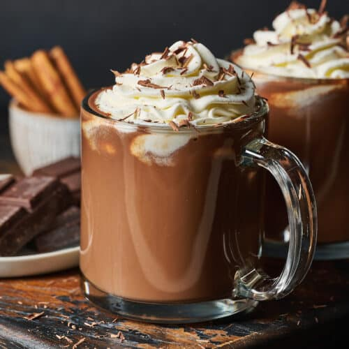

Hot Chocolate

Description
Hot chocolate, also known as hot cocoa or drinking chocolate, is a
heated drink consisting of shaved or melted chocolate or cocoa
powder, heated milk or water, and usually a sweetener. It is often
garnished with whipped cream or marshmallows. Hot chocolate made
with melted chocolate is sometimes called drinking chocolate,
characterized by less sweetness and a thicker consistency.
Ingredients
- 2 and 3/4 cup whole milk
- 1 cup heavy cream
- 1/8 tsp fine sea salt
- 8 ounces fine grated chocolate
- 1 tbsp confectioner sugar
Optional
- 2 tsp vanilla extract
- 1/8 tsp ground cinnamon
Steps
- In a medium saucepan, whisk together the whole milk, heavy cream,
and salt. Place over medium-heat and cook just until the mixture
comes to a rolling simmer – not a full boil.
- Remove the saucepan from the heat and add in the chopped chocolate,
whisk well until the chocolate is completely melted.
- Return the saucepan to low heat. Stir in the confectioners' sugar
(and vanilla and cinnamon, if using) and cook, whisking constantly,
for 8 to 10 minutes, or until super thick and smooth.
- Ladle into mugs. Garnish with lots of whipped cream and shaved
chocolate, if desired. Serve at once!